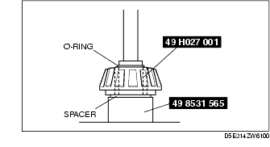

Workshop Manual ➭ DRIVELINE/AXLE ➭ DIFFERENTIAL ➭ REAR DIFFERENTIAL ASSEMBLY
REAR DIFFERENTIAL ASSEMBLY
id031400800600
{: #wp1059776}
Warning
• The engine stand is equipped with a self-lock mechanism, however, if the rear differential is tilted, the self-lock mechanism could become inoperative. If the rear differential unexpectedly rotates, it could cause injury, therefore do not maintain the rear differential tilted. When turning the rear differential, grasp the rotation handle firmly.
*Note*{: #wp1059796}
• Clean away the old silicone sealant before applying the new silicone sealant. {: #wp1069403}• Install the rear cover within 10 min after applying the silicone sealant. {: #wp1059814}• Allow the sealant to set at least 30 min or more after installation before filling the differential with differential oil.
- Assemble in the order indicated in the table.{: #wp1059852}
|
Gear case {: #wp1059893} |
|
|---|---|
|
2 {: #wp1059931} |
Side gear {: #wp1059934} |
|
3 {: #wp1059938} |
Thrust washer {: #wp1059941} |
|
4 {: #wp1059975} |
Pinion gear {: #wp1059978} |
|
5 {: #wp1059992} |
Pinion shaft {: #wp1059995} |
|
6 {: #wp1060009} |
Washer {: #wp1060012} (See Washer Assembly Note.) {: #wp1060028} |
|
7 {: #wp1060040} |
Roll pin {: #wp1060043} (See Roll Pin Assembly Note.) {: #wp1060061} |
|
8 {: #wp1060073} |
Ring gear {: #wp1060076} (See Ring Gear Assembly Note.) {: #wp1060096} |
|
9 {: #wp1060108} |
Side bearing {: #wp1060111} (See Side Bearing Assembly Note.) {: #wp1060133} |
|
10 {: #wp1060145} |
Differential gear case component {: #wp1060148} |
|
11 {: #wp1060170} |
Differential carrier {: #wp1060173} |
|
12 {: #wp1060195} |
Oil seal (side gear) {: #wp1060198} (See Oil Seal (Side Gear) Assembly Note.) {: #wp1060222} |
|
13 {: #wp1060234} |
Rear bearing outer race {: #wp1060237} (See Rear Bearing Outer Race Assembly Note.) {: #wp1060263} |
|
14 {: #wp1060275} |
Front bearing outer race {: #wp1060278} (See Front Bearing Outer Race Assembly Note.) {: #wp1060306} |
|
15 {: #wp1060318} |
Spacer {: #wp1060321} (See Spacer Assembly Note.) {: #wp1060351} |
|
16 {: #wp1060363} |
Drive pinion {: #wp1060366} |
|
17 {: #wp1060396} |
Rear bearing {: #wp1060399} (See Rear Bearing Assembly Note.) {: #wp1060431} |
|
18 {: #wp1060443} |
Drive pinion component {: #wp1060446} (See Drive Pinion Component Assembly Note.) {: #wp1060480} |
|
19 {: #wp1060492} |
Collapsible spacer {: #wp1060495} |
|
20 {: #wp1060529} |
Front bearing {: #wp1060532} |
|
21 {: #wp1060566} |
Spacer {: #wp1060569} |
|
22 {: #wp1060603} |
Oil seal (companion flange) {: #wp1060606} (See Oil Seal (Companion Flange) Assembly Note.) {: #wp1060642} |
|
23 {: #wp1060654} |
Companion flange {: #wp1060657} |
|
24 {: #wp1060693} |
Washer {: #wp1060696} |
|
25 {: #wp1060732} |
Locknut {: #wp1060735} (See Locknut Assembly Note.) {: #wp1060773} |
|
26 {: #wp1060785} |
Adjustment shim {: #wp1060788} (See Adjustment Shim Assembly Note.) {: #wp1060828} |
|
27 {: #wp1060840} |
Side bearing race {: #wp1060843} |
|
28 {: #wp1060883} |
Bearing cap {: #wp1060886} (See Bearing Cap Assembly Note.) {: #wp1060928} |
|
29 {: #wp1060940} |
Baffle plate {: #wp1060943} |
|
30 {: #wp1060985} |
Rear cover {: #wp1060988} |
|
31 {: #wp1061030} |
Breather plug {: #wp1061033} |
|
32 {: #wp1061075} |
Oil-level plug {: #wp1061078} |
|
33 {: #wp1061121} |
Drain plug {: #wp1061124} |
Washer Assembly Note
-
Assemble the side gear, thrust washer, pinion gear, and the pinion shaft to the gear case.
-
Install the dial gauge with the measuring probe of the dial gauge attached perpendicularly to the end of one of the pinion gear teeth.{: #wp1061244}
-
Fix either one of the side gears.
-
Move the pinion gear and measure the backlash at the pinion gear top.
• If it is not within the specification, adjust by choosing the proper washer.
Backlash of pinion gear and side gear0.1 mm {0.004 in} or less
**Washer table
+----------------------------------------+------------------------------+----------------------------------------+ | Identification mark {: #wp1061433} | Part name {: #wp1061435} | Thickness (mm {in}) {: #wp1061437} | +========================================+==============================+========================================+ | 9 {: #wp1061351} | MA29 27 252 {: #wp1061353} | 0.90 {0.0354} {: #wp1061409} | +----------------------------------------+------------------------------+----------------------------------------+ | 95 {: #wp1061456} | MA29 27 253 {: #wp1061459} | 0.95 {0.0374} {: #wp1061462} | +----------------------------------------+------------------------------+----------------------------------------+ | 0 {: #wp1061466} | MA29 27 254 {: #wp1061469} | 1.00 {0.0393} {: #wp1061472} | +----------------------------------------+------------------------------+----------------------------------------+ | 05 {: #wp1061476} | MA29 27 256 {: #wp1061479} | 1.05 {0.0413} {: #wp1061482} | +----------------------------------------+------------------------------+----------------------------------------+ | 1 {: #wp1061577} | MA29 27 257 {: #wp1061580} | 1.10 {0.0433} {: #wp1061583} | +----------------------------------------+------------------------------+----------------------------------------+**{: #wp1061343}
Roll Pin Assembly Note
-
Align the differential gear case and pinion shaft pin holes.
-
Tap the roll pin in using a pin punch.
Ring Gear Assembly Note
Caution
• The gear case and ring gear could be damaged if the ring gear is installed with old thread-locking compound remaining on the bolt threads. Before installing the ring gear, completely remove the old thread-locking compound from the bolt threads.
- Apply a small amount of thread-locking compound to each of points A on the back of the ring gear, and bolt thread areas B (around the entire ring).{: #wp1061667}
Application thicknessBack of ring gear points A:Approx. 0.4 cm3 {0.4 cc, 0.024 cu in}(1 location approx. 0.04 cm3 {0.04 cc, 0.0024 cu in})Ring gear bolt thread points B:Approx. 0.4 cm3 {0.4 cc, 0.024 cu in}(1 location approx. 0.04 cm3 {0.04 cc, 0.0024 cu in})
- Install the ring gear to the differential gear case and tighten the bolts in a criss-cross pattern.
Tightening torque68.6-83.3 N·m{7.00-8.49 kgf·m, 50.6-61.4 ft·lbf}
Side Bearing Assembly Note
*Note*{: #wp1061863}
• When assembling the side bearings, do not mix the left and right side bearings that were identified during disassembly.
- Press the side bearing in using the SST and a press.{: #wp1061881}

Oil Seal (Side Gear) Assembly Note
-
Apply differential oil to the lip of a new oil seal.
-
Assemble the oil seal using the SSTs.{: #wp1061947}
Rear Bearing Outer Race Assembly Note
- Press the rear bearing outer race into the differential carrier using the SST and a press.{: #wp1061993}
Front Bearing Outer Race Assembly Note
- Press the front bearing outer race into the differential carrier using the SST and a press.{: #wp1062039}
Spacer Assembly Note
Pinion height adjustment
*Note*{: #wp1062095}
• Use the installed spacer when adjusting. {: #wp1069407}• Install the spacer with the chamfer on the SST side.
- Assemble the spacer, bearing inner race (rear side), and the SST (O-ring) to the SST (49 8531 565) as shown in the figure.{: #wp1062153}

- Insert the set assembled in Step 1 from the rear side of the differential carrier.{: #wp1062179}
-
Assemble the SST (49 8531 567), front bearing, companion flange, and a washer from the front side of the differential carrier.
-
Tighten the locknut to the extent that the SST (49 8531 565) can be turned by hand.
-
Place the SST (49 N027 001) on top of the SST (49 8531 565).
-
Place the SST on the surface plate and set the dial gauge to zero.{: #wp1062273}
- Set the SSTs as shown in the figure.{: #wp1062309}
-
Place the measuring probe of the dial gauge at the point where the side bearing is installed in the differential carrier and measure at the lowest position. Measure the left and right sides.
-
Add the two (left and right) values obtained by the measurements taken in Step 8 and then divide the total by 2. From this sum, subtract the sum of the number inscribed on the end of the drive pinion divided by 100. (If there is no figure inscribed, use 0.) This is the pinion height adjustment value.{: #wp1062375}
Differential pinion height0.038 mm {0.0015 in} or less
*Note*{: #wp1062429}
• When the values obtained by the measurements taken in Step 8, 9 are 0.06 mm {0.0024 in}, 0.04 mm {0.0016 in} and the tip surface of the drive pinion value is 2, the formula is ((0.06+0.04)/2)-(2/100)=0.03. Therefore, assemble a spacer 0.03 mm {0.0012} thicker than the currently assembled one. The thickness settings are in increments of 0.015 mm {0.0006}, so choose one closest in thickness and install.
**Spacer table
+----------------------------------------+----------------------------------------+----------------------------------------+----------------------------------------+ | Identification mark {: #wp1062586} | Thickness (mm {in}) {: #wp1062588} | Identification mark {: #wp1062590} | Thickness (mm {in}) {: #wp1062592} | +========================================+========================================+========================================+========================================+ | 08 {: #wp1062480} | 3.080 {0.1213} {: #wp1062482} | 29 {: #wp1062538} | 3.290 {0.1295} {: #wp1062541} | +----------------------------------------+----------------------------------------+----------------------------------------+----------------------------------------+ | 09 {: #wp1062615} | 3.095 {0.1220} {: #wp1062618} | 30 {: #wp1062621} | 3.305 {0.1301} {: #wp1062624} | +----------------------------------------+----------------------------------------+----------------------------------------+----------------------------------------+ | 11 {: #wp1062628} | 3.110 {0.1224} {: #wp1062631} | 32 {: #wp1062634} | 3.320 {0.1307} {: #wp1062637} | +----------------------------------------+----------------------------------------+----------------------------------------+----------------------------------------+ | 12 {: #wp1062641} | 3.125 {0.1230} {: #wp1062644} | 33 {: #wp1062647} | 3.335 {0.1313} {: #wp1062650} | +----------------------------------------+----------------------------------------+----------------------------------------+----------------------------------------+ | 14 {: #wp1062654} | 3.140 {0.1234} {: #wp1062657} | 35 {: #wp1062660} | 3.350 {0.1319} {: #wp1062663} | +----------------------------------------+----------------------------------------+----------------------------------------+----------------------------------------+ | 15 {: #wp1062825} | 3.155 {0.1242} {: #wp1062828} | 36 {: #wp1062831} | 3.365 {0.1325} {: #wp1062834} | +----------------------------------------+----------------------------------------+----------------------------------------+----------------------------------------+ | 17 {: #wp1062864} | 3.170 {0.1248} {: #wp1062867} | 38 {: #wp1062870} | 3.380 {0.1331} {: #wp1062873} | +----------------------------------------+----------------------------------------+----------------------------------------+----------------------------------------+ | 18 {: #wp1062903} | 3.185 {0.1254} {: #wp1062906} | 39 {: #wp1062909} | 3.395 {0.1337} {: #wp1062912} | +----------------------------------------+----------------------------------------+----------------------------------------+----------------------------------------+ | 20 {: #wp1062942} | 3.200 {0.1260} {: #wp1062945} | 41 {: #wp1062948} | 3.410 {0.1343} {: #wp1062951} | +----------------------------------------+----------------------------------------+----------------------------------------+----------------------------------------+ | 21 {: #wp1062981} | 3.215 {0.1266} {: #wp1062984} | 42 {: #wp1062987} | 3.425 {0.1348} {: #wp1062990} | +----------------------------------------+----------------------------------------+----------------------------------------+----------------------------------------+ | 23 {: #wp1063020} | 3.230 {0.1271} {: #wp1063023} | 44 {: #wp1063026} | 3.440 {0.1354} {: #wp1063029} | +----------------------------------------+----------------------------------------+----------------------------------------+----------------------------------------+ | 24 {: #wp1063059} | 3.245 {0.1278} {: #wp1063062} | 45 {: #wp1063065} | 3.455 {0.1360} {: #wp1063068} | +----------------------------------------+----------------------------------------+----------------------------------------+----------------------------------------+ | 26 {: #wp1063098} | 3.260 {0.1283} {: #wp1063101} | 47 {: #wp1063104} | 3.470 {0.1366} {: #wp1063107} | +----------------------------------------+----------------------------------------+----------------------------------------+----------------------------------------+ | 27 {: #wp1063137} | 3.275 {0.1289} {: #wp1063140} | - {: #wp1063143} | - {: #wp1063146} | +----------------------------------------+----------------------------------------+----------------------------------------+----------------------------------------+**{: #wp1062472}
Rear Bearing Assembly Note
*Note*{: #wp1063185}
• Install the spacer with the chamfer on the gear side.
-
Assemble the spacer selected in the pinion height adjustment to the drive pinion.
-
Press the drive pinion into the rear bearing using the SSTs and a press.{: #wp1063213}
Drive Pinion Component Assembly Note
Drive pinion preload adjustment
*Note*{: #wp1063281}
• Perform preload adjustment with the oil seal uninstalled.
- Assemble the following parts to the drive pinion.
• New collapsible spacer {: #wp1063309}• Front bearing {: #wp1063323}• New spacer {: #wp1063333}• Companion flange {: #wp1063343}• New washer {: #wp1063353}• New locknut
-
Turn the serrated part of the drive pinion by hand to seat the bearing.
-
Tighten the locknut temporarily tightened in Step 1 from the lower limit of the specified tightening torque using the SST, and obtain the specified preload. Record the tightening torque at this time.
Tightening torque
128-284 N·m {13.06-28.96 kgf·m, 94.41-209.4 ft·lbf}
Drive pinion preload
1.3-1.8 N·m {14-18 kgf·cm, 12-15 in·lbf}
• If the specified preload cannot be obtained within the specified tightening torque, replace with a new collapsible spacer and adjust again.
- Remove the locknut, washer, and companion flange.
Oil Seal (Companion Flange) Assembly Note
-
Apply differential oil to the lip of a new oil seal.
-
Assemble the oil seal using the SST.{: #wp1063529}
Locknut Assembly Note
- Tighten a new locknut with the torque recorded at the drive pinion preload adjustment using the SST.{: #wp1063575}

- Verify that the drive pinion preload is within the specification.{: #wp1063611}
• If not within the specification, perform the preload adjustment again.
Drive pinion preload1.3-1.8 N·m {14-18 kgf·cm, 12-15 in·lbf}
Adjustment Shim Assembly Note
Ring gear backlash adjustment
- Stack the side bearing race and differential gear case component on the surface plate as shown in the figure, and measure the height using a calliper and a ruler. This is value A.{: #wp1063705}
Standard Height A
151.4-152.6 mm {5.961-6.007 in}
- Measure the width of the section of the differential gear case component installed in the differential carrier. This is value B.{: #wp1063763}
Standard width B171 mm {6.73 in}
- The combined thickness of the left and right adjustment shims is obtained by the following formula.
Shim thickness (mm {in}) =B-A+ (0.01-0.03 {0.0004-0.0118 in})
-
If the combined thickness of the previously assembled adjustment shims is equal to the calculated thickness, use the shims as they are.
-
If the combined thickness of the previously assembled adjustment shims is not equal to the calculated thickness, or if the adjustment shims have to be replaced, select two appropriate adjustment shims from the table below.
Adjustment shim table
|
Identification mark {: #wp1064010} |
Thickness (mm {in}) {: #wp1064012} |
Identification mark {: #wp1064014} |
Thickness (mm {in}) {: #wp1064016} |
|---|---|---|---|
|
550 {: #wp1063904} |
5.50 {0.217} {: #wp1063906} |
605 {: #wp1063962} |
6.05 {0.238} {: #wp1063965} |
|
560 {: #wp1064039} |
5.60 {0.220} {: #wp1064042} |
610 {: #wp1064045} |
6.10 {0.240} {: #wp1064048} |
|
565 {: #wp1064052} |
5.65 {0.222} {: #wp1064055} |
615 {: #wp1064058} |
6.15 {0.242} {: #wp1064061} |
|
570 {: #wp1064065} |
5.70 {0.224} {: #wp1064068} |
620 {: #wp1064071} |
6.20 {0.244} {: #wp1064074} |
|
575 {: #wp1064078} |
5.75 {0.226} {: #wp1064081} |
625 {: #wp1064084} |
6.25 {0.246} {: #wp1064087} |
|
580 {: #wp1064249} |
5.80 {0.228} {: #wp1064252} |
630 {: #wp1064255} |
6.30 {0.248} {: #wp1064258} |
|
585 {: #wp1064288} |
5.85 {0.230} {: #wp1064291} |
635 {: #wp1064294} |
6.35 {0.250} {: #wp1064297} |
|
590 {: #wp1064327} |
5.90 {0.232} {: #wp1064330} |
640 {: #wp1064333} |
6.40 {0.252} {: #wp1064336} |
|
595 {: #wp1064366} |
5.95 {0.234} {: #wp1064369} |
650 {: #wp1064372} |
6.50 {0.256} {: #wp1064375} |
|
600 {: #wp1064405} |
6.00 {0.236} {: #wp1064408} |
|
|
*Note*{: #wp1064443}
• If the adjustment shims are to be reused, assemble the left and right shims that were identified during disassembly. {: #wp1069411}• When assembling the side bearing races, do not mix the left and right side bearings that were identified during disassembly.
-
Assemble the differential gear case component and the side bearing race to the differential carrier.
-
Tap the selected adjustment shim between the differential carrier and the side bearing race with a plastic hammer as shown in the figure.{: #wp1064481}

-
Align the bearing cap alignment marks, assemble the bearing cap, and then temporarily tighten the bolts.
-
Install the dial gauge with the measuring probe of the dial gauge attached perpendicularly to the end of one of the ring gear teeth.{: #wp1064520}
- Secure the drive pinion and measure the backlash of the ring gear.
Backlash of drive pinion and ring gearStandard: 0.09-0.11 mm {0.0035-0.0043 in}Minimum value: 0.05 mm {0.0020 in} or moreVariance: 0.07 mm {0.0028 in} or less
*Note*{: #wp1064638}
• Measure the backlash at 4 locations around the ring gear. Make sure all of the 4 locations are within specification, and the minimum value for the 4 locations is 0.05 mm {0.0020in} or more and the variance is 0.07 mm {0.0028 in} or less
- If the backlash is not within the specification, adjust the gear case component by moving it in the axial direction.
*Note*{: #wp1064707}
• When moving the gear case component in the axial direction, replace the adjustment shims. If the adjustment shim on the right side is replaced with one that is 0.05 mm {0.0020 in} thicker, replace the one on the left with one that is 0.05 mm {0.0020 in} thinner.
Bearing Cap Assembly Note
- Align the bearing cap alignment marks and assemble the bearing cap with the arrow facing outward.
Tightening torque72.6-106.9 N·m {7.41-10.91 kgf·m, 53.5-78.84 ft·lbf}
- Perform the drive pinion and ring gear tooth contact inspection.
Drive Pinion, Ring Gear Tooth Contact Inspection
-
Apply tooth marking compound evenly to both surfaces of the ring gear.
-
Rotate the ring gear back and forth for several times.
-
Inspect the tooth contact pattern in 4 locations around the ring gear, and verify that the tooth contact points exhibit the pattern shown in the figure.
• If the tooth contact points are normal, wipe off the marking compound.
{: #wp1064870}• If the tooth contact points are not normal, adjust the pinion height, then adjust the backlash.
- If the toe and flank contact points appear as shown in the figure after the drive pinion and ring gear teeth contact inspection, replace the spacer with a thinner one, and move the drive pinion outward.{: #wp1064921}
- If the heel and face contact points appear as shown in the figure after the drive pinion and ring gear teeth contact inspection, replace the spacer with a thicker one, and move the drive pinion inward.{: #wp1064948}